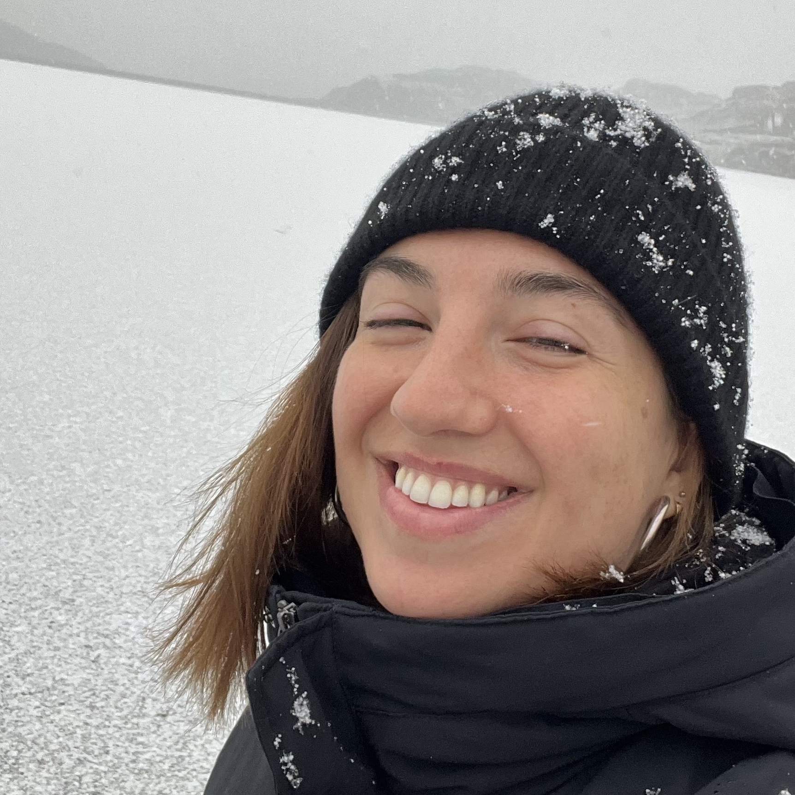

Hello!
I'm a postdoctoral researcher at MilaNLP in Bocconi University. My research interests lie at the intersection of Human-Computer Interaction (HCI) and Natural Language Processing (NLP), with the aim of building NLP systems that centre humans. I am particularly interested in ethics, with a strong influence from Feminism. In my work, I draw from diverse fields in the humanities – such as philosophy, sociolinguistics, and psychology – and approach them using empirical methods from NLP and HCI. I completed my PhD at Heriot-Watt University in Edinburgh, supervised by Prof Verena Rieser.
Below you can find some of my past and ongoing projects:
